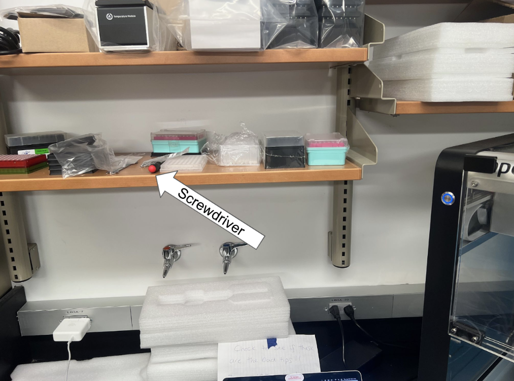
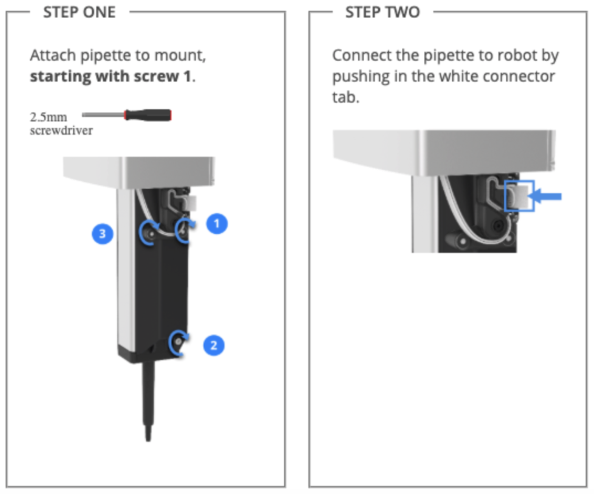

Opentrons OT-2 Pipetting Robot
Set up and use instructions.
Important Links
Opentrons OT-2 Support and Set-Up
You will need to create a free account to access this protocol designer.
Associated Materials and Attachments
Pipettes
Single Channel
P10, 1-10 uL
P50, 5-50 uL
P300, 30-300 uL
P1000, 100-1000 uL
Multichannel
P10, 1-10 uL
P50, 5-50 uL
P300, 30-300 uL
Tips
10 uL
300 uL
1000 uL
Attachments
- Temperature Module (look into protocols)
Other Materials
Calibration block - used to calibrate multichannel pipettes
Removable trash bin (in machine)
Aluminum 96 well plate (Temp module compatible)
Aluminum 24 well plate (Temp module compatible)
Aluminum flat plate (Temp module compatible)
96 well PCR plates
12 well plastic reservoir, 22 mL
Set-Up
Starting Up and Connecting Your Laptop
Opentrons pipetting OT-2 robot is located in the shared equipment lab in the back left corner of the room.
Make sure the power cable and USB cable are plugged into the robot and wall.
Download the Opentrons app. Do not open it yet.
Turn on the robot with the power switch on its back left side. Make sure the blue light on the front of the machine is solid and not flashing and that you hear machinery start-up noises. Start-up can take a minute or two.
Connect your computer to the USB cable attached to the OT-2. If you need a USB-c to USB adaptor, ask Nicole! Then, open the Opentrons app after the robot is fully on (troubleshooting here.
In the app, go to the “Devices” tab in the left panel. Select the OT-2 robot.
Note:It may take a few minutes for your computer to acknowledge the robot. If after several minutes the robot does not appear, close out of the app, turn the machine off and on, and try the connection steps again.
Install any robot or app updates if prompted (robot updates take several minutes).
You may need to restart the robot and exit and re-enter the app to begin step two of the robot updates. It seems to be a finnicky process.
The blue light on the top left of the robot will begin flashing once it has begun downloading the update.
The robot may restart itself as part of the update process.
The flashing should stop when the update is complete.
Mounting Pipet Arms
Remove everything from the robot deck (tip racks, wells, etc.). The used tip collection bin can remain.
Under Devices, select the robot.
Under Pipettes and Modules, click on the three dots for either the left or right pipette mount.
If there is already a pipette in the mount, select detach pipette.
When ready, select “Attach pipette” from the submenu.
Click on “Move pipette to front” and wait for the arm to stop moving forward.
On the next page that pops us, select the pipette model (all ours are Gen1) and the volume.
Bring the pipette onto the mount.
- Align the small dots on the back of the pipette with the matching prongs toward the top of the mount.
- Find the hex screwdriver (should be on lower shelf to the left of the machine).

If mounting a multi-channel pipette, place the ends of the pipette on the deck so all are evenly resting on the surface. The pipette should still be aligned with the prongs on the mount. Hand leveling multichannel pipettes is essential for proper function.
Screw in the screws according to the diagram below. Push in the white connector tag until you feel it click into place.

- In the Opentrons app, prompt the robot to check the connection. If the connection fails, try pushing the white tag in more. Check connection again.
Deck Calibration
Note: Deck calibration only needs to be done once or twice a year, so you can likely skip this step and head straight to pipette calibration.
Select the robot from “Devices” and click the three dots on the top right of the page.
Go to “Robot Settings.”
Under “Deck Calibration,” select “Recalibrate Deck.”
Follow calibration instructions as prompted by the app.
Pipette Calibration
Once the pipette connection is established, click on the calibration pop-up. The pop-up may not show up if the arm has been recently calibrated. Make sure to calibrate any newly mounted pipettes.
Follow instructions in the app to complete offset and tip-length calibration.
Protocols
Deck preparation
Place all materials (tip rack, plates, reservoirs, etc.) in the numbered blocks on the deck. Keep track of which materials are in which blocks when you write your protocol.
Ensure that everything fits snugly in the blocks. They should not slide around when you push them. Put the black rectangular bases on anything that is too small for the blocks.
Close the acrylic door when all materials are within.
Uploads and Runs
- Save the protocol you want to run to your laptop.
- Thus far, .json and .py files have been compatible. The non-coding protocol designer’s default file output format is .json. Protocols from the public library tend to be in .py format.
In the Opentrons app, go to the “Protocols” tab. Select the blue “Import” tab in the top right.
Select “Choose File” or drag and drop your protocol in. Once it uploads, it should be visible in an alphabetized list under “Protocols”.
Click on the protocol. Select “Run Protocol.” The app will prompt you to select the OT-2 robot. Then click “Proceed to setup.”
Ensure the deck view in the app matches the way you have the deck set up with materials.
Click “Start run.”
Cleaning
Materials
70% ethanol (not for acrylic panels, ethanol will cause cracks)
10% bleach
Kimwipes or paper towels
Notes:
AVOID cleaning anything that does not have explicit instructions on the cleaning website listed at the top of the page. You may damage electrical elements of the machine.
Spray cleaning fluids onto a paper towel or Kimwipe. Do not douse any part of the machine in fluid.
Surfaces
Wipe down acrylic windows with bleach only.
Wipe down the following parts of the gantry using either isopropyl alcohol or bleach:
X rail cover
X carriage
Mount cover
Clean the following parts of the deck using either isopropyl alcohol or bleach:
Removable deck
Stationary deck
Trash base
Trash cover
Clean the following parts of the frame using isopropyl alcohol or ethyl alcohol:
Black frame
Y rail cover
Silver frame
Pipettes
Use 70% ethanol to clean pipettes.
See this link for detailed pipette cleaning info.